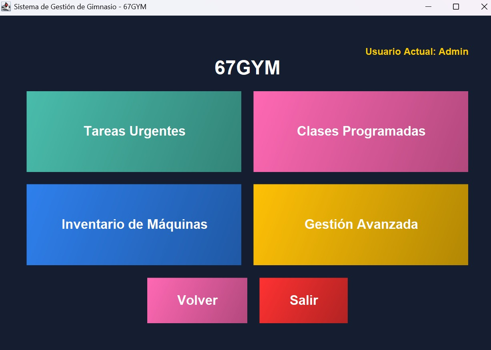
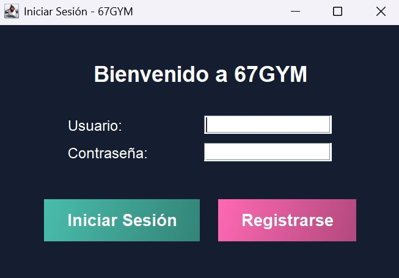

<!DOCTYPE html>
<html lang="es">
<head>
  <meta charset="UTF-8" />
  <meta name="viewport" content="width=device-width, initial-scale=1" />
  <title>Manual del Programa del Gimnasio </title>
  <!-- Iconos (opcional) -->
  <link rel="stylesheet" href="https://cdnjs.cloudflare.com/ajax/libs/font-awesome/6.5.1/css/all.min.css" crossorigin="anonymous" referrerpolicy="no-referrer" />
  <style>
    :root{
      --bg:#0b0f14; --paper:#0f1520; --ink:#e6edf5; --muted:#9db0c3; --brand:#2563eb; --brand-2:#60a5fa; --accent:#f59e0b; --ok:#10b981; --bad:#ef4444;
      --ring:0 0 0 3px rgba(96,165,250,.35);
      --radius:14px; --shadow:0 10px 30px rgba(0,0,0,.2);
    }
    *{box-sizing:border-box}
    html,body{height:100%}
    body{margin:0;font-family:system-ui,-apple-system,Segoe UI,Roboto,Ubuntu,Cantarell,Noto Sans,Helvetica,Arial;background:linear-gradient(180deg,#0c121a,#0b0f14);color:var(--ink)}
    a{color:inherit}
    .container{width:min(1100px,92vw);margin-inline:auto}

    /* Encabezado */
    header.site{background:linear-gradient(135deg,var(--brand),var(--brand-2));color:#061224;padding:28px 0}
    header .title{display:flex;gap:12px;align-items:center;justify-content:center}
    header .title i{filter:drop-shadow(0 6px 12px rgba(0,0,0,.25))}
    header p{margin:8px 0 0;text-align:center;color:#0b1a34;font-weight:600}

    /* Barra y navegación */
    .topbar{position:sticky;top:0;z-index:40;background:rgba(10,15,22,.7);backdrop-filter:blur(10px);border-bottom:1px solid #1b2a3e}
    .topbar-inner{display:flex;gap:12px;align-items:center;justify-content:space-between;padding:10px 0}
    .btn{background:#122034;border:1px solid #213147;color:#dce6f2;border-radius:10px;padding:10px 14px;cursor:pointer}
    .btn:hover{filter:brightness(1.08)}
    .btn-primary{background:linear-gradient(135deg,var(--brand),var(--brand-2));border:none;color:#04142b;font-weight:800}
    .btn-danger{background:#2a1213;border-color:#51201f;color:#ffd7d7}
    .btn-ghost{background:transparent;border:1px solid #24354c}
    .btn[aria-current="page"]{outline: none; box-shadow: var(--ring)}

    nav.tabs{display:flex;gap:10px;justify-content:center}
    nav.tabs button{min-width:160px}

    /* Secciones */
    section{display:none;padding:22px;max-width:1000px;margin:18px auto;background:linear-gradient(180deg,#0f1520,#0b1016);border:1px solid #1a2330;border-radius:14px;box-shadow:var(--shadow)}
    section.active{display:block}
    h1,h2,h3,h4{margin:8px 0}
    h2{font-size:clamp(20px,2.2vw,28px)}
    h3{font-size:clamp(16px,1.9vw,22px);color:#d7e4f3}
    p{color:#cfdaea}
    ul{margin-left:20px}
    li i{color:var(--brand);margin-right:8px}
    .muted{color:#9db0c3}
    .figure{border:1px dashed #2a3a52;border-radius:12px;padding:12px;text-align:center;color:#98a9be}
    .figure small{display:block;color:#7e8da1}
    pre{background:#0a0f15;border:1px solid #1a2330;border-radius:10px;padding:12px;overflow:auto;color:#d8e2f1}

    /* Utilidades */
    .row{display:flex;gap:10px;flex-wrap:wrap;align-items:center}
    .right{margin-left:auto}

    /* Pie */
    footer.site{padding:26px 0;color:#9eb0c3;border-top:1px solid #1b2a3e;margin-top:26px}

    /* Modo claro */
    .light body, body[data-theme="light"]{background:linear-gradient(180deg,#f7fafc,#eef2f7);color:#0b0f14}
    body[data-theme="light"] header.site{background:white;color:#0b0f14;border-bottom:1px solid #e5e7eb}
    body[data-theme="light"] section{background:white;border-color:#e5e7eb}
    body[data-theme="light"] .topbar{background:white;border-color:#e5e7eb}

    /* Impresión */
    @media print{
      header.site, .topbar, nav.tabs, .actions, .only-screen{display:none !important}
      body{background:white;color:black}
      section{box-shadow:none;border:1px solid #ccc}
      a{text-decoration:none;color:black}
      section{page-break-inside:avoid}
    }
  </style>
</head>
<body>
  <!-- ENCABEZADO -->
  <header class="site">
    <div class="container">
      <div class="title">
        <i class="fas fa-dumbbell"></i>
        <h1>Manual del Programa del Gimnasio</h1>
        <i class="fas fa-dumbbell"></i>
      </div>
      <p>Guía de usuario y manual técnico </p>
    </div>
  </header>

  <!-- TOPBAR / ACCIONES -->
  <div class="topbar">
    <div class="container topbar-inner actions">
      <div class="row">
        <button class="btn btn-ghost only-screen" id="btn-theme" title="Cambiar tema">🌗 Tema</button>
        <button class="btn btn-ghost only-screen" id="btn-presenter" title="Modo exposición">🎤 Exponer</button>
        <button class="btn btn-primary only-screen" onclick="window.print()" title="Imprimir o guardar PDF">🖨️ PDF</button>
      </div>
      <div class="right">
        <span class="muted">Actualizado: <span id="fecha"></span></span>
      </div>
    </div>
  </div>

  <!-- TABS -->
  <div class="container" style="margin-top:12px">
    <nav class="tabs" role="tablist" aria-label="Secciones del manual">
      <button class="btn" role="tab" id="tab-intro" data-target="intro"><i class="fas fa-home"></i> Introducción</button>
      <button class="btn" role="tab" id="tab-usuario" data-target="usuario"><i class="fas fa-user"></i> Manual de Usuario</button>
      <button class="btn" role="tab" id="tab-tecnico" data-target="tecnico"><i class="fas fa-cogs"></i> Manual Técnico</button>
    </nav>
  </div>

  <!-- CONTENIDO -->
  <main class="container">
    <!-- Intro -->
    <section id="intro" class="active" tabindex="-1">
      <h2><i class="fas fa-info-circle"></i> Bienvenido al Programa del Gimnasio</h2>
      <p>Este programa permite gestionar empleados, tareas, máquinas y clases de un gimnasio de manera eficiente. Con una interfaz intuitiva, los administradores y usuarios pueden ver, agregar y modificar información clave del gimnasio.</p>
      <div class="figure">
        
        <small>Figura 1. Panel principal del sistema</small>
      </div>
    </section>

    <!-- Usuario (contenido previo intacto) -->
    <section id="usuario" tabindex="-1">
      <h2><i class="fas fa-user-friends"></i> Manual de Usuario</h2>
      <p class="muted">Esta sección explica <strong>cómo funciona el programa desde la vista del usuario</strong>, basado en la lógica real del sistema (clase <code>Main</code> en Java). Incluye inicio de sesión, manejo de datos (empleados, tareas, máquinas, clases) y acciones típicas que el usuario puede realizar.</p>

      <h3><i class="fas fa-right-to-bracket"></i> 1) Inicio de sesión y registro</h3>
      <ul>
        <li><strong>Usuarios predefinidos</strong>: <code>admin/admin123</code>, <code>clienteA/passA</code>, <code>clienteB/passB</code>. (Mapa <code>users</code> en memoria).</li>
        <li>Al abrir la app se muestra <code>LoginFrame</code>. Puedes alternar a <code>RegistroFrame</code> para crear una cuenta nueva.</li>
        <li>Tras autenticación correcta, se abre <code>MainFrame</code> y se guarda el usuario actual en <code>Main.currentUser</code>.</li>
      </ul>

      <div class="figure">
  
  <small>Figura 1. Autenticación y cambio a Registro</small>
</div>


      <h3><i class="fas fa-sitemap"></i> 2) Datos que verás en la interfaz</h3>
      <ul>
        <li><strong>Encabezado</strong>: título <em>67GYM</em> y etiqueta <em>Usuario Actual: &lt;rol/nombre&gt;</em> (p. ej., Admin).</li>
        <li><strong>Tareas Urgentes</strong>: acceso a la cola de tareas prioritarias para ver y atender primero las más urgentes(Solo el admin tiene acceso a esta opción).</li>
        <li><strong>Clases Programadas</strong>: tu agenda de clases; aquí puedes revisar/gestionar las clases agregadas a tu perfil, al igual hay un botón para iniciar la siguiente clase, pero solo el admin lo puede ejecutar.</li>
        <li><strong>Inventario de Máquinas</strong>: listado de máquinas del gimnasio y su estado (Operativa / En reparación) y solamente el admin puede cambiar su estado.</li>
        <li><strong>Gestión Avanzada</strong>: opciones administrativas (p. ej., configuraciones y gestiones avanzadas — solamente el Admin puede ingresar o usar esta opción).</li>
        <li><strong>Volver</strong>: regresar a la pantalla anterior o menú previo.</li>
        <li><strong>Salir</strong>: cerrar sesión o salir de la aplicación.</li>
      </ul>

      <h3><i class="fas fa-person-walking"></i> 3) Flujo típico del usuario</h3>
      <ol>
        <li><strong>Entrar</strong> con tu usuario/contraseña.</li>
        <li><strong>Explorar</strong> módulos: Empleados, Tareas, Máquinas y Clases.</li>
        <li><strong>Clases</strong>:
          <ul>
            <li>Consulta <em>clasesDisponibles</em> y agrega a tu horario con <code>addClaseProgramada(Clase)</code>.</li>
            <li>Revisa tu agenda con <code>getClasesProgramadasUsuario()</code> (usa <code>currentUser</code>).</li>
            <li>Si una clase se cancela para todos, el sistema usa <code>removeClaseProgramadaForAll(Clase)</code>.</li>
            <li>Nota: Solamente el admin puede usar el botón de "Ejecutar Siguiente clase", una vez ejecutada la clase se borrará de las clases programadas de todos los usuarios.</li>
          </ul>
        </li>
        <li><strong>Tareas</strong> (solamente el admin puede entrar):
          <ul>
            <li>Ver tareas pendientes ordenadas (por prioridad/fecha) desde la <em>cola</em>.</li>
            <li>Buscar detalle por ID con <code>buscarTareaPorId(String)</code>.</li>
            <li>Al igual se pueden agegar tareas, las cuales se ordenan autómaticamente por su fecha de entrega</li>
            <li>Calcular tiempo total estimado con <code>calcularTiempoTotalRecursivo(List, index)</code>.</li>
          </ul>
        </li>
      </ol>
      <!-- Los antiguos 5 y 6 convertidos a viñetas -->
      <ul>
        <li><strong>Máquinas</strong>: ver estado y reportar incidencias (cambios reflejados en <code>listaMaquinas</code>).</li>
        <li>Solamente el admin puede cambiar el estado, pero cualquier usuario puede ver dichos estados de las máquinas.</li>
      </ul>

      <div class="callout"><strong>Nota:</strong> las acciones visibles pueden variar según el rol o pantalla (p. ej., clienteA, clienteB o administración).</div>

      <h3><i class="fas fa-chalkboard-teacher"></i> 4) ¿Qué hay precargado?</h3>
      <p>El sistema ya incluye datos de ejemplo para exponer:</p>
      <ul>
        <li><strong>Empleados</strong>: 100 perfiles aprox. (Coach, Ventas, Marketing, Limpieza, Mantenimiento, Cajero, Operaciones, RH, Finanzas). Están en el árbol y en el hashmap por ID (E001…E100).</li>
        <li><strong>Tareas</strong>: 15 tareas con IDs <code>T001…T015</code>, fecha de entrega y prioridad.</li>
        <li><strong>Máquinas</strong>: 20 máquinas con estado (Operativa / En reparación).</li>
        <li><strong>Clases</strong>: catálogo con Yoga, Zumba, Spinning, HIIT, etc., con instructor y horario.</li>
      </ul>

      <h3><i class="fas fa-code"></i> 5) Lógica relevante (simplificada)</h3>
      <pre>// Variables centrales (Main)
public static Map<String,String> users;
private static PriorityQueue<TareaPrioridad> colaTareas;
private static ArbolBinarioEmpleados arbolEmpleados;
private static Map<String,Empleado> hashEmpleados;
private static List<Maquina> listaMaquinas;
private static List<Clase> clasesDisponibles;
private static Map<String,List<Clase>> clasesProgramadasPorUsuario;
public static String currentUser; // usuario logueado

// Agenda personal
public static List<Clase> getClasesProgramadasUsuario(){
  if(currentUser==null) return new ArrayList<>();
  return clasesProgramadasPorUsuario.getOrDefault(currentUser,new ArrayList<>());
}

public static void addClaseProgramada(Clase c){
  if(currentUser==null) return;
  List<Clase> l = clasesProgramadasPorUsuario.computeIfAbsent(currentUser,k->new ArrayList<>());
  if(!l.contains(c)) l.add(c);
}

// Tareas
public static TareaPrioridad buscarTareaPorId(String id){ return hashTareas.get(id); }
public static List<TareaPrioridad> ordenarTareasPorPrioridadYFecha(List<TareaPrioridad> t){
  List<TareaPrioridad> s = new ArrayList<>(t);
  Collections.sort(s, Comparator.comparing(TareaPrioridad::getFechaEntrega));
  return s;
}</pre>

      <details>
        <summary><strong>¿Cómo se ordenan las tareas?</strong></summary>
        <p>La <code>PriorityQueue</code> prioriza automáticamente (p. ej., menor número = más urgente). Además, el manual muestra un orden auxiliar por <em>fecha de entrega</em> usando <code>Collections.sort</code> (ver código).</p>
      </details>

      <h3><i class="fas fa-shield-halved"></i> 6) Seguridad y sesión</h3>
      <ul>
        <li>Las credenciales demo están en memoria solo para exposición. En producción deberían ir cifradas y en BD.</li>
        <li>Las operaciones de agenda dependen de <code>currentUser</code>; si no hay sesión activa, no se agregan clases.</li>
      </ul>

      
    </section>

    <!-- Técnico (NUEVO contenido integrado) -->
  <section id="tecnico" tabindex="-1">
  <h2><i class="fas fa-cogs"></i> Manual Técnico</h2>

  <p class="muted">
    En este manual se documenta la <strong>parte técnica</strong> del sistema de gestión de gimnasio,
    mostrando cómo las estructuras de datos y algoritmos se integran al funcionamiento del programa.
    La explicación está enfocada en los pasos de uso dentro del sistema y en cómo cada módulo se
    relaciona con la lógica interna.
  </p>

  <h3><i class="fas fa-book-open"></i> 1) Introducción</h3>
  <p>
    El sistema fue desarrollado en <strong>Java</strong> con interfaz <strong>Swing</strong>.
    Se integraron estructuras de datos como <em>árbol binario</em>, <em>tablas hash</em>,
    <em>colas de prioridad</em> y <em>listas</em>, además de algoritmos como
    <em>recorridos recursivos</em>, <em>búsquedas</em>, <em>Merge Sort</em> y
    <em>cálculos recursivos</em>. Todo esto se utilizó para manejar empleados,
    tareas, clases y máquinas de manera eficiente.
  </p>

  <h3><i class="fas fa-tree"></i> 2) Gestión de empleados con Árbol Binario</h3>
  <ol>
    <li>Accede a <strong>Gestión Avanzada</strong> y selecciona la opción <em>Árbol Binario</em>.</li>
    <li>El sistema recorre el árbol en <em>inorden</em>, mostrando a los empleados
        ordenados alfabéticamente por departamento.</li>
    <li>Si deseas buscar un departamento específico, escribe su nombre. El sistema usa
        una <strong>búsqueda recursiva</strong> y muestra únicamente los empleados de esa área.</li>
    <li>Si no existen coincidencias, se muestra un mensaje de “sin resultados”.</li>
  </ol>
  <p class="muted">Internamente se usa la estructura <em>ArbolBinarioEmpleados</em>, donde cada nodo almacena un empleado con su ID, nombre y área.</p>

  <h3><i class="fas fa-table-list"></i> 3) Uso de Tablas Hash para empleados y tareas</h3>
  <ol>
    <li>Entra a <strong>Gestión Avanzada</strong> y selecciona <em>Tablas Hash</em>.</li>
    <li>Presiona el botón <em>Mostrar Todos los Empleados</em> para listar los 100 empleados precargados.</li>
    <li>Para hacer una búsqueda puntual, introduce el <strong>ID</strong> de un empleado
        (ejemplo: <code>E028</code>) y verifica que se muestre su información.</li>
    <li>En el caso de las tareas, se usan operaciones similares para acceder por su ID y
        también se pueden eliminar tareas de la tabla.</li>
  </ol>
  <p class="muted">El sistema usa <code>put</code>, <code>get</code> y <code>remove</code> para manejar los datos de forma eficiente en memoria.</p>

  <h3><i class="fas fa-list-ol"></i> 4) Manejo de tareas urgentes con Cola de Prioridad</h3>
  <ol>
    <li>Accede a <strong>Tareas Urgentes</strong> desde el menú principal.</li>
    <li>Agrega una nueva tarea: el sistema la insertará en la posición correspondiente según
        su prioridad y fecha de entrega.</li>
    <li>Usa el botón <em>Siguiente tarea</em> para extraer y visualizar la tarea más urgente.
        Internamente se aplica la operación <code>poll()</code> de la cola.</li>
    <li>En la opción de estadísticas, el sistema calcula recursivamente el tiempo total de todas las tareas pendientes.</li>
    <li>En la opción de optimización, se ejecuta un <strong>Merge Sort</strong> para ordenar
        las tareas según su duración estimada, aplicando el principio de <em>divide y vencerás</em>.</li>
  </ol>
  <p class="muted">Gracias a esta estructura, siempre se atienden primero las tareas más importantes, simulando la gestión de urgencias en un gimnasio real.</p>

  <h3><i class="fas a-dumbbell"></i> 5) Listas para clases y máquinas</h3>
  <ol>
    <li>En <strong>Clases Programadas</strong> puedes ver tus clases guardadas.
        Internamente, cada usuario tiene una lista que almacena sus clases.</li>
    <li>En <strong>Inventario de Máquinas</strong> se consultan las máquinas disponibles y su estado.
        Cada máquina se guarda en una lista que permite modificar su estado (solo para administradores).</li>
  </ol>
  <p class="muted">Se usan listas dinámicas para manejar datos que cambian constantemente, como la agenda de clases o el estado de las máquinas.</p>

  <h3><i class="fas fa-chalkboard-teacher"></i> 6) Procedimientos de prueba</h3>
  <ul>
    <li><strong>Árbol Binario</strong>: mostrar empleados ordenados y buscar un departamento.</li>
    <li><strong>Tablas Hash</strong>: listar empleados y buscar por ID.</li>
    <li><strong>Cola de Prioridad</strong>: agregar tarea, extraer la más urgente, calcular tiempo total y optimizar con Merge Sort.</li>
    <li><strong>Listas</strong>: consultar clases programadas y verificar el inventario de máquinas.</li>
  </ul>

  <h3><i class="fas fa-shield-halved"></i> 7) Seguridad y sesión</h3>
  <p>
    Todas las operaciones dependen del <strong>usuario actual</strong>. Por ejemplo, las clases
    programadas se guardan en función de la sesión activa. Las cuentas de prueba se guardan en
    memoria, pero en un entorno real se recomienda usar una base de datos con credenciales cifradas.
  </p>

  <h3><i class="fas fa-flag-checkered"></i> 8) Conclusión</h3>
  <p>
    Con este sistema se demuestra cómo las estructuras de datos y algoritmos vistos en el curso
    se aplican de forma práctica. Cada módulo combina interfaz y lógica: el árbol organiza empleados,
    las tablas hash permiten búsquedas rápidas, la cola de prioridad gestiona urgencias y las listas
    manejan recursos cambiantes. De esta forma, se cumple con los objetivos del proyecto final,
    mostrando un sistema funcional y eficiente.
  </p>
</section>


  </main>

  <footer class="site">
    <div class="container">
      <small>© <span id="year"></span> 67GYM </small>
    </div>
  </footer>

  <!-- Script compatible/defensivo (anti-freeze) -->
  <script>
  (function () {
    function ready(fn){
      if (document.readyState !== 'loading') fn();
      else document.addEventListener('DOMContentLoaded', fn);
    }
    ready(function(){
      try {
        var now = new Date();
        var f = document.getElementById('fecha'); if (f) f.textContent = now.toLocaleDateString();
        var y = document.getElementById('year');  if (y) y.textContent = now.getFullYear();

        var tabs = document.querySelectorAll('nav.tabs [role="tab"]');
        var sections = document.querySelectorAll('main section');
        function activate(id){
          for (var i=0;i<sections.length;i++){
            sections[i].classList.toggle('active', sections[i].id === id);
          }
          for (var j=0;j<tabs.length;j++){
            var on = tabs[j].getAttribute('data-target') === id;
            tabs[j].setAttribute('aria-current', on ? 'page' : 'false');
          }
          try { localStorage.setItem('manual-tab', id); }catch(e){}
        }
        for (var k=0;k<tabs.length;k++){
          (function(btn){
            btn.addEventListener('click', function(ev){
              ev.preventDefault(); activate(btn.getAttribute('data-target'));
            });
          })(tabs[k]);
        }
        var initial = (location.hash || '').replace('#','');
        try { if (!initial) initial = localStorage.getItem('manual-tab') || ''; }catch(e){}
        activate(initial || 'intro');

        window.addEventListener('keydown', function(e){
          var tag = (document.activeElement || {}).tagName;
          if (tag === 'INPUT' || tag === 'TEXTAREA') return;
          if (e.key === '1') activate('intro');
          if (e.key === '2') activate('usuario');
          if (e.key === '3') activate('tecnico');
        });

        var btnTheme = document.getElementById('btn-theme');
        if (btnTheme) btnTheme.addEventListener('click', function(){
          var isLight = document.body.getAttribute('data-theme')==='light';
          document.body.setAttribute('data-theme', isLight ? 'dark':'light');
        });

        var btnPresenter = document.getElementById('btn-presenter');
        if (btnPresenter) btnPresenter.addEventListener('click', function(){
          document.documentElement.style.scrollBehavior='smooth';
          document.body.style.fontSize = document.body.style.fontSize ? '' : '18px';
        });
      } catch(err){ try{ console.error(err); }catch(e){} }
    });
  })();
  </script>
</body>
</html>
